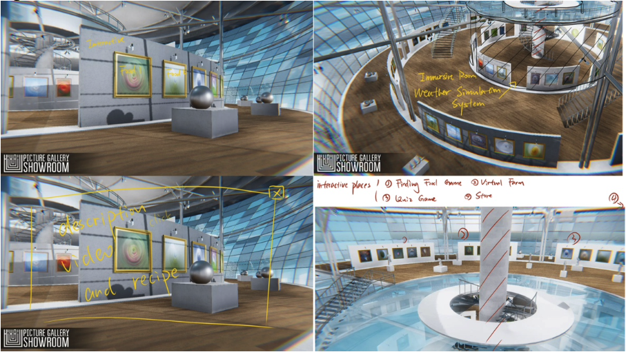
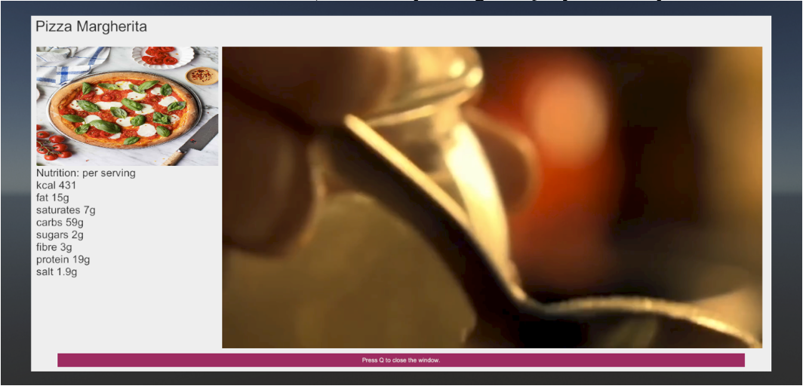
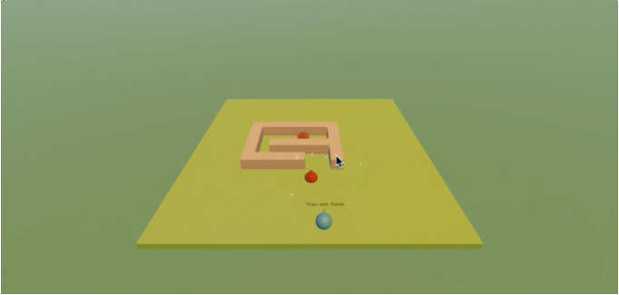
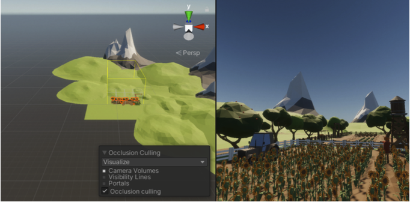
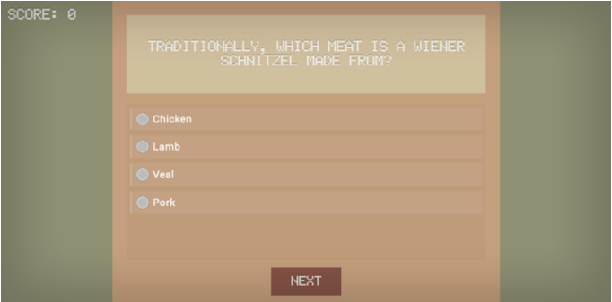

DESIGNER
| YUXI ZHANG
This virtual museum project creates an immersive 3D environment for visitors to explore various exhibits and interactive zones within a digital space. Through the use of Unity, it brings to life an innovative museum experience where each section—ranging from interactive designs reflecting interaction design principles to mini-games that educate on food preparation—serves a unique educational purpose. Features such as dynamic weather in the immersive room and quizzes on food culture enhance visitor engagement, making learning both interactive and enjoyable.


RECIPE
This figure displays the user interface for a pizza information window, incorporating multimedia elements to enrich the visitor's learning experience.
This figure displays the user interface for a pizza information window, incorporating multimedia elements to enrich the visitor's learning experience.

IMMERSIVE ROOM
Depicted here are the dynamically changing weather conditions in the immersive room, achieved through the clever use of lighting and imagery to simulate various atmospheric effects.
Depicted here are the dynamically changing weather conditions in the immersive room, achieved through the clever use of lighting and imagery to simulate various atmospheric effects.

FINDING FOOD
A maze game designed to allow the player to understand the ingredients needed to make different foods.
The figure captures the moment of "death" in a game, where the player character disintegrates into particles, demonstrating the game's interactive feedback mechanism.
A maze game designed to allow the player to understand the ingredients needed to make different foods.
The figure captures the moment of "death" in a game, where the player character disintegrates into particles, demonstrating the game's interactive feedback mechanism.

VIRTUAL FARM
This screenshot showcases a part of the scene being rendered, illustrating the implementation of Occlusion Culling for efficient graphical performance in the virtual farm environment.
This screenshot showcases a part of the scene being rendered, illustrating the implementation of Occlusion Culling for efficient graphical performance in the virtual farm environment.

QUIZ GAME
Featured is the quiz game interface, designed with a focus on simplicity and clarity, facilitating an engaging and educational experience for the visitor.
Featured is the quiz game interface, designed with a focus on simplicity and clarity, facilitating an engaging and educational experience for the visitor.
This sketch illustrates the planning of the museum, highlighting different interactive areas designed to enhance visitor engagement through diverse functionalities.